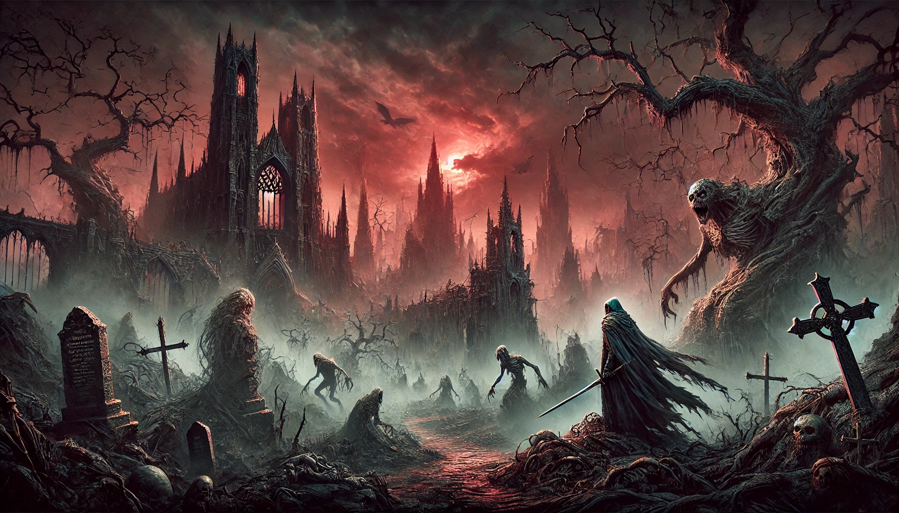

THE HOLLOWVEIL KING
In the decaying kingdom of Varesth, a curse had spread like a plague, twisting men into beasts and turning the dead into restless shadows. You are a forsaken knight who has returned to his homeland, drawn by whispers of an artifact, the Heart of the Hollow Veil. Said to break the curse or doom the land forever.